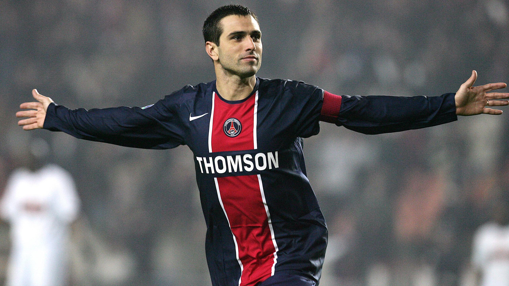

Pedro Miguel Pauleta, né le 28 avril 1973 à Ponta Delgada, est un ancien footballeur
portugais qui a évolué sous les couleurs du PSG entre 2003 et 2008. Buteur iconique de
la ligue 1 des années 2000, Pauleta révolutionne le poste d'avant-centre au PSG. Il est très
efficace dès ses débuts au club et devient un de ses meilleurs buteurs. Pauleta fait
beaucoup de bien à l'attaque parisienne; buteur hors-pair, il contribue grandement aux succès
du PSG tant en Ligue 1 que sur la scène européenne.
En sélection nationale,
'L'aigle des Açores' évolue dans un Portugal en plein âge d'or. Entouré de Luis Figo,
Deco, Rui Costa ou encore CR7, Pauleta peut développer son plein potentiel, entouré de
légendes du foot. Il s'inscrit lui aussi dans l'histoire de son poste, de sa sélection et
du Paris SG.